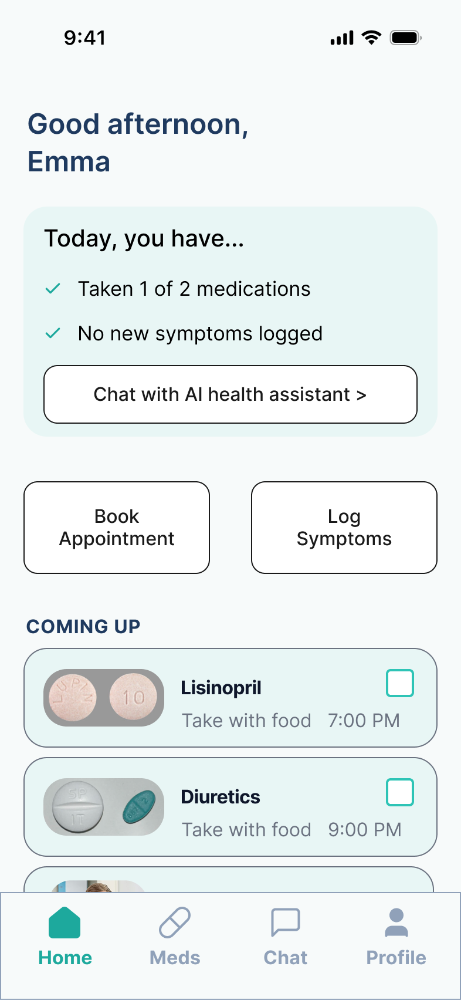
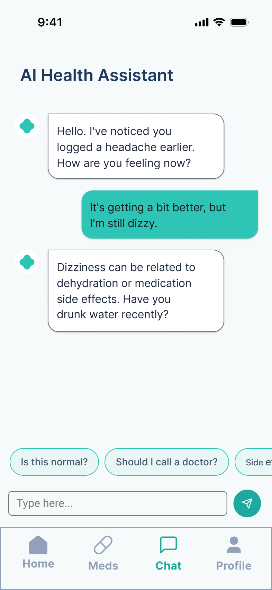
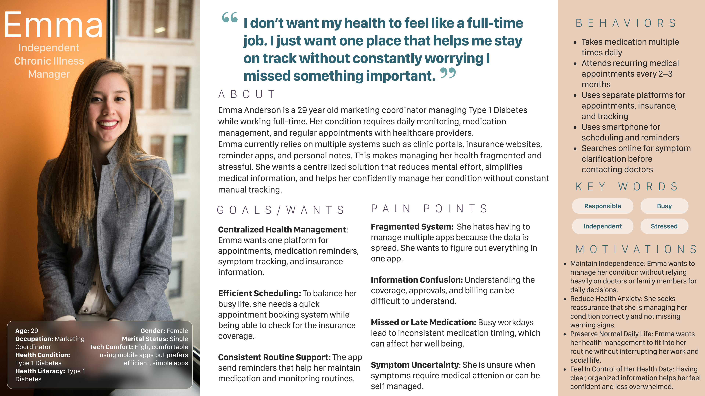
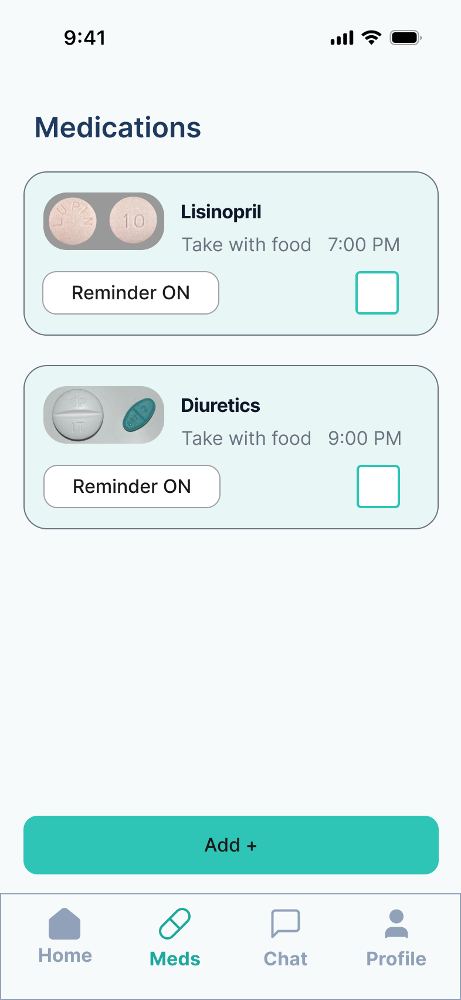
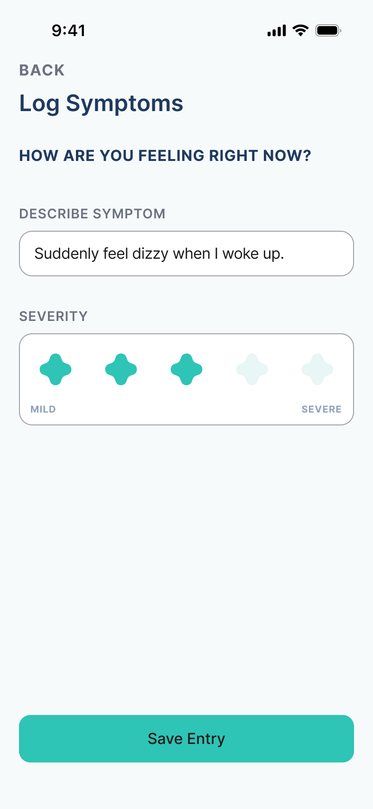
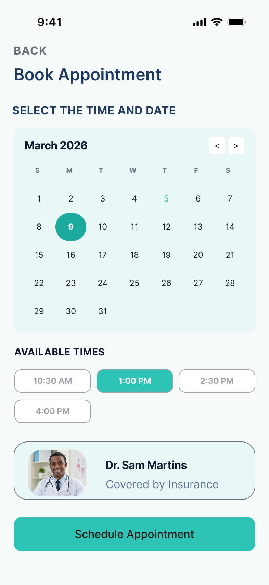
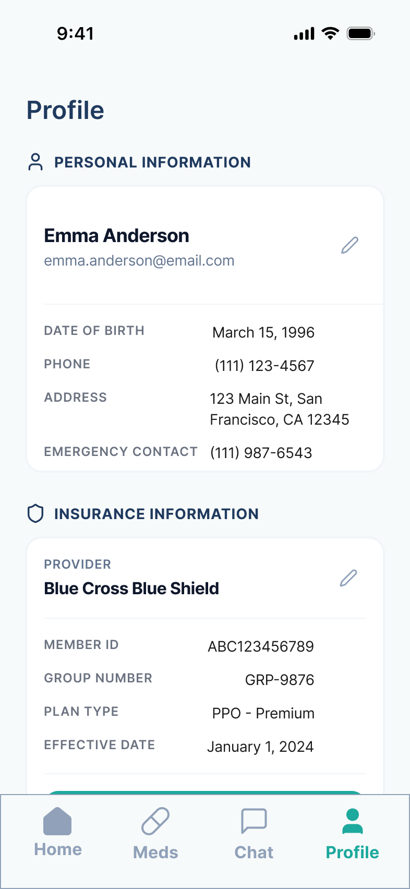

Case 02 / Mobile app
Health U
Managing a chronic illness shouldn't feel like a full-time job.

— The problem
People managing chronic illnesses juggle clinic portals, insurance sites, reminder apps, and personal notes. The cognitive overhead of running that stack daily — on top of the illness itself — makes consistent care harder than it should be.
— The outcome
Health U, a mobile app built around an AI health assistant that pulls medication reminders, symptom tracking, appointments, and past results into one place. Designed for someone who already has too much to think about — the app's job is to think less, not look smart.
Context & problem
People managing chronic illnesses do not lack tools. They have too many. A clinic portal for appointments, an insurance site for coverage, a separate reminder app for medications, a notes app for symptoms, a search engine when something feels off. Each tool, on its own, is fine. The problem is that they don't talk to each other — and the patient becomes the integration layer.
That integration is tiring. It's also where mistakes happen: a missed dose, a forgotten appointment, a piece of information confused between systems. None of that is the patient's fault, but it lands on them anyway, in a moment when they have the least slack.
Health U was designed around one persona — Emma Anderson, 29, a marketing coordinator managing Type 1 Diabetes. Her line, the line that became the design brief for the project:
"I don't want my health to feel like a full-time job. I just want one place that helps me stay on track without constantly worrying I missed something important."
Who it's for. People managing chronic illness who need medication reminders, symptom tracking, easier communication with their health information, clearer health insights — and less stress in the management itself.
Constraints. Solo project, mobile-only, scoped to a single semester (UXDG 101).
My role
Solo project. I owned the full process end to end: research, persona development, problem framing, design strategy, visual system, and the final mobile design.
It's the case study where I can point to every decision and say it was mine.
Research
The research was small but mixed. I ran two semi-structured interviews with people managing chronic conditions, and supplemented with secondary research across reports and patient accounts on how chronic illness gets managed day to day. The combination — direct accounts on one side, the broader picture on the other — is what kept the insights honest rather than generic.
Three insights mattered most, and each one pushed the design in a specific direction:
- Healthcare is scattered across multiple tools. The work isn't the care itself; it's juggling the tools that hold the care. → That set the product's whole premise: one place instead of one more place.
- Patients want clearer explanations of their symptoms and health trends. The data exists; readability doesn't. → That pushed me to design for understanding, not just tracking — surfaces that show patterns, not just numbers.
- Many people feel overwhelmed managing their condition. On a normal day, the hardest part of chronic illness is the management layer, not the illness. → That made cognitive load the central design constraint. Every screen had to answer "does this make her day easier, or harder?"
The persona work then made those three insights concrete. Emma Anderson gave the project a real person to design against — someone with a full-time job, a real medical condition, and zero patience for another app to learn.
Goal
There was no metric to hit — this was a course project, scoped to design and demo, not a shipped app with usage data. What it needed instead was a bar every screen had to clear.
The research had already set the terms: "does this make her day easier, or harder?" Every screen was tested against that question before it was tested against anything else. That bar mattered more here than it would in most projects, because the research also explained how health apps lose people in the first place: participants described them as more effort, more complexity, one more thing that adds stress — and several stayed away for exactly that reason, expecting an app to be complicated before they had even tried one. An app for managing a condition that adds to the managing has already lost. The three design principles the process crystallized into — Simplicity, Personalization, Clear Health Tracking — were the concrete form of that bar.
Decisions & tradeoffs
Reduce, don't bury
Chronic illness management actually needs detail: dosages, timings, conditions, history. The temptation is to ship that detail flat, on every screen, "just in case." That would have buried the user.
The principle I held the design to: show the right detail at the right moment, and let the AI assistant remember everything else. The assistant autofills repetitive information — medications, doctors, appointment specifics — so the user spends less effort entering data they already gave once. The tradeoff is real: simplicity has to coexist with the depth chronic illness actually requires. The AI does most of that depth-holding off-screen.
Friendly, but not at the expense of trust
This was the hardest balance to get right — I called it out in my reflection. Health U is friendly and human-centered on purpose: people managing chronic illness don't need another cold, clinical interface. But the moment a health app reads as too warm or too playful, trust drops, and so does compliance. A medication reminder you don't trust is a medication you don't take.
So the design walks a line: warm visual system, plain conversational language from the assistant, no cute mascots. The AI is helpful, not chipper.

Designed for the breadth of chronic illness, anchored in one
"Chronic illness" is not one design problem. Type 1 Diabetes, autoimmune conditions, chronic pain, mental health — each one wants a different information surface. Designing for all of them at once risked landing on something abstract enough to fit nothing well.
The fix was to design with one, not for all. Emma's Type 1 Diabetes anchored the feature set and the visual system, while the architecture (assistant + medications + symptoms + appointments + past results) was deliberately built to transfer. The narrowness made the design honest; the structure kept the door open.
The design
5a · Process
The design strategy crystallized into three principles that every screen was tested against:
- Simplicity — reduce cognitive load for users who are already dealing with health challenges.
- Personalization — the AI assistant tailors insights, reminders, and suggestions to the user's history, symptoms, and medication patterns.
- Clear Health Tracking — present information in a way that's easy to understand and actionable, not just stored.

5b · Final solution
Five features sit under one AI health assistant:
- AI Health Assistant — remembers user health data and provides personalized insights, reminders, and support.
- Medication Management — track medications and receive timely reminders so doses stay consistent.
- Symptom Tracking — log symptoms and monitor patterns over time, to make the invisible visible.
- Appointment Scheduling — book appointments easily; the assistant autofills doctors, specialties, and insurance information so the user doesn't restate themselves.
- Past Test Results — easy access to historical results, so progress becomes something the user can see, not guess.
01
Dashboard
The first thing you see is a calm summary, not a wall of data — taken 1 of 2, no new symptoms.
02
AI Health Assistant
It notices the headache you logged and opens the conversation — the remembering is the app's job.

03
Medication Management
Doses and reminders in one view, so a missed dose isn't one more thing to track.

04
Symptom Tracking
Logging a symptom in a sentence — the invisible made visible, with severity in one tap.

05
Appointment Scheduling
Book in a couple of taps — the assistant carries the doctor and insurance details forward.

06
Past Results
History you can actually read — CBC, Vitamin D, A1C, flagged when something needs a look.
Outcome
Health U was a course project. It ended at design and demo — I didn't run formal usability testing. So I want to be honest about what's outcome here vs. what's promise.
What I'd hold up as having worked, by my own design read:
- The AI assistant carries weight without dominating. It does the remembering, so the user doesn't have to.
- The simplified design stayed simplified all the way to the final visuals — that doesn't always survive a semester-long project.
- The dashboard reads as a calm summary, not a status-anxiety machine.
In review, classmates kept pointing to the same three things: that the design felt clean, that it carried only what was needed, and that everything on the screen was clear about what it was — no guessing what a control did. My professor called out the app itself and the features specifically, and the project finished with an A.
Those weren't the boxes I'd been most worried about, which is partly why they're worth noting. The parts I'd tuned hardest — the AI assistant, the cognitive-load reductions — landed without anyone needing them pointed out.
[Kelly: worth naming which features the professor actually singled out, if you remember — that's a stronger sentence than the general one above.]
Reflection
What worked well. The AI assistant feature, the simplified design, and the dashboard.
What was hard. Three tensions I kept negotiating: designing for the range of chronic illnesses rather than just one; balancing simplicity with the level of detail that chronic illness actually requires; and balancing the friendly, human-centered tone with the precision an AI health feature needs to feel trustworthy.
What I'd do differently. Push the same principle further: design for less user input. The AI assistant is already doing a lot of the remembering, but I'd lean on it harder — autofill more, ask less, and treat every form field as something the assistant has to earn rather than something the user has to fill. The version I'd build next is even quieter than this one.
Next steps for Health U as a concept (from the original submission, still true):
- Integration with wearable devices, so health data is captured rather than entered.
- Deeper AI health insights, so the assistant isn't just an interface — it's an interpreter.
- Doctor communication, so the patient isn't always the messenger.